<title>Calendar Step Two</title>
<style>
/* Layout: one column of questions, each with today-beside-new phone pictures that tap to open full size. Raptor's own dark look, single theme on purpose. */
:root{
  --bg:#0d1014; --panel:#151a20; --edge:#26303a; --fg:#e8eef3; --quiet:#93a2ae; --accent:#3bc6e8; --ok:#5fbf8a;
  --display:"Barlow Condensed","Arial Narrow",system-ui,sans-serif; --body:"Barlow",system-ui,-apple-system,"Segoe UI",sans-serif;
  color-scheme:dark;
}
body{background:var(--bg);color:var(--fg);font-family:var(--body);font-size:16px;line-height:1.5;padding-inline:16px;padding-block:20px 48px}
main{max-width:980px;margin:0 auto;display:grid;gap:28px}
h1{font-family:var(--display);font-size:34px;letter-spacing:.04em;text-transform:uppercase;margin:0;text-wrap:balance}
h2{font-family:var(--display);font-size:24px;letter-spacing:.03em;margin:0;text-wrap:balance}
p{margin:0;max-width:65ch}
.lede{color:var(--quiet)}
section{background:var(--panel);border:1px solid var(--edge);border-radius:14px;padding:18px;display:grid;gap:14px;min-width:0}
.rec{border-left:3px solid var(--accent);padding-left:12px}
.rec b{color:var(--accent)}
.pics{display:grid;grid-template-columns:repeat(auto-fit,minmax(150px,1fr));gap:12px}
figure{margin:0;display:grid;gap:6px;min-width:0}
figure a{display:block;border:1px solid var(--edge);border-radius:10px;overflow:hidden}
figure a:focus-visible{outline:2px solid var(--accent);outline-offset:2px}
figure img{display:block;width:100%;height:auto}
figcaption{font-size:13px;color:var(--quiet)}
figcaption b{color:var(--fg)}
.tag{display:inline-block;font-size:11px;letter-spacing:.08em;text-transform:uppercase;padding:1px 7px;border-radius:999px;border:1px solid var(--edge);color:var(--quiet);margin-right:6px}
.tag.new{border-color:var(--accent);color:var(--accent)}
ul{margin:0;padding-left:20px;display:grid;gap:6px}
.answer{font-family:var(--display);font-size:20px;color:var(--ok)}
</style>
<link rel="stylesheet" href="https://fonts.googleapis.com/css2?family=Barlow:wght@400;600&family=Barlow+Condensed:wght@600&display=swap">

<main>
  <header style="display:grid;gap:8px">
    <h1>Calendar step two — four questions</h1>
    <p class="lede">Step two moves the app's three older small calendars onto the new one you approved in step one. Here is each place as it is today (left), beside the new calendar (right, already built in Admin → Data). Tap any picture to see it full size. Each question has my recommendation; reply "as recommended" or name the ones to change.</p>
  </header>

  <section>
    <h2>The new calendar (already built — step one)</h2>
    <div class="pics">
      <figure><a href="20-NEW-admin-date-range-phone.png">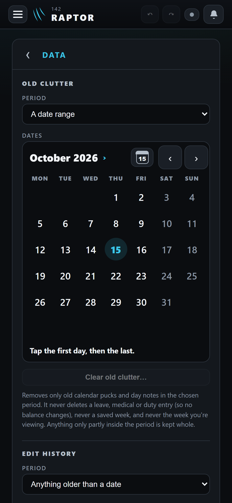</a><figcaption><span class="tag new">new</span><b>A run of dates</b> — Admin → Data</figcaption></figure>
      <figure><a href="21-NEW-every-from-date-phone.png">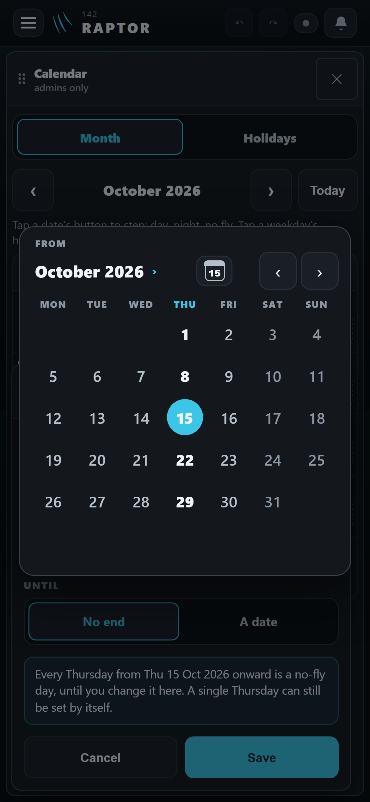</a><figcaption><span class="tag new">new</span><b>One date</b> — Calendar → Every Thursday → From</figcaption></figure>
    </div>
  </section>

  <section>
    <h2>1. "Clear" under the calendar</h2>
    <p>Today the Leave War's calendars and "Add a holiday" have a <b>Clear</b> button under the dates. The new calendar has none: a tap on a new day starts the dates over (your rule from step one). Only one place needs the dates EMPTY: the bidding dates, where no dates means "Open the whole year".</p>
    <div class="pics">
      <figure><a href="01-leavewar-bid-range-phone.png">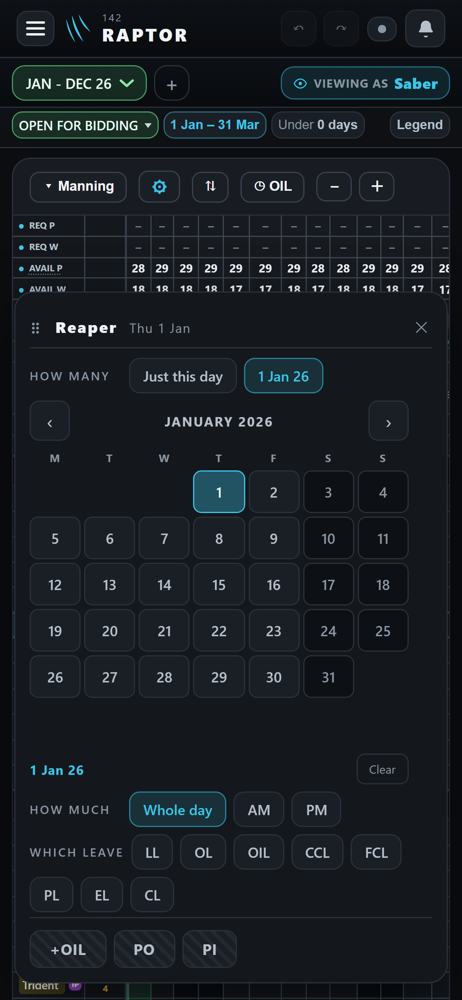</a><figcaption><span class="tag">today</span><b>A leave bid</b> — "Clear" bottom right</figcaption></figure>
      <figure><a href="03-leavewar-bidding-dates-phone.png">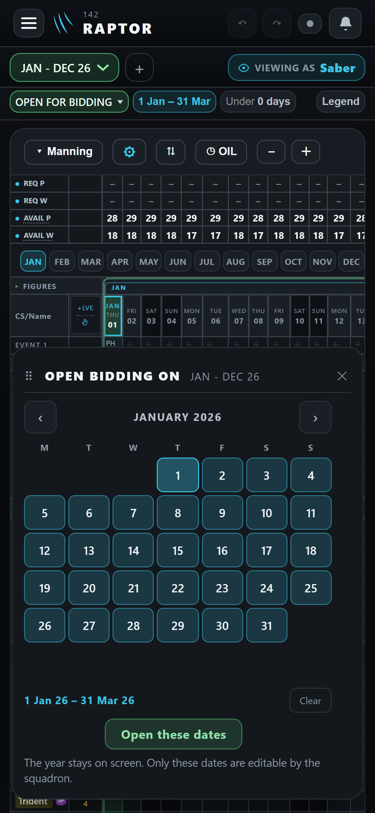</a><figcaption><span class="tag">today</span><b>The bidding dates</b> — empty means the whole year</figcaption></figure>
      <figure><a href="07-calendar-window-add-holiday-phone.png">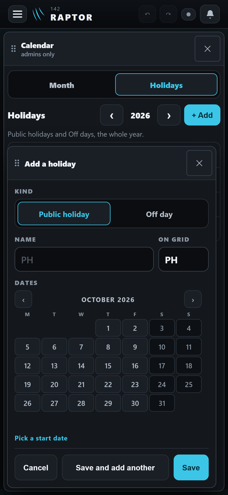</a><figcaption><span class="tag">today</span><b>Add a holiday</b></figcaption></figure>
    </div>
    <p class="rec"><b>Recommended:</b> no Clear anywhere, except the bidding dates keep a small "Clear dates" under the calendar.</p>
  </section>

  <section>
    <h2>2. Today's date on the Leave War's calendars</h2>
    <p>The Leave War's calendars show no "today" (they were built before the app had one). The new calendar shows today on a soft blue disc and has the Today icon. It would still OPEN on the war's own dates, not on today.</p>
    <div class="pics">
      <figure><a href="02-leavewar-new-period-phone.png">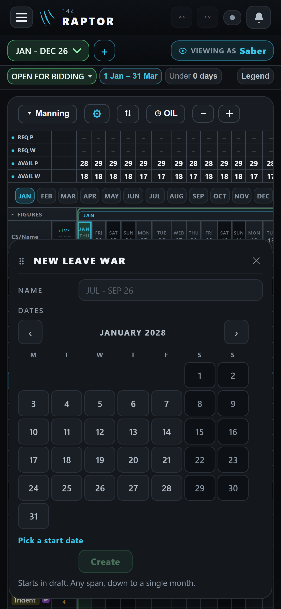</a><figcaption><span class="tag">today</span><b>A new leave period</b> — no today</figcaption></figure>
      <figure><a href="04-leavewar-event-range-phone.png">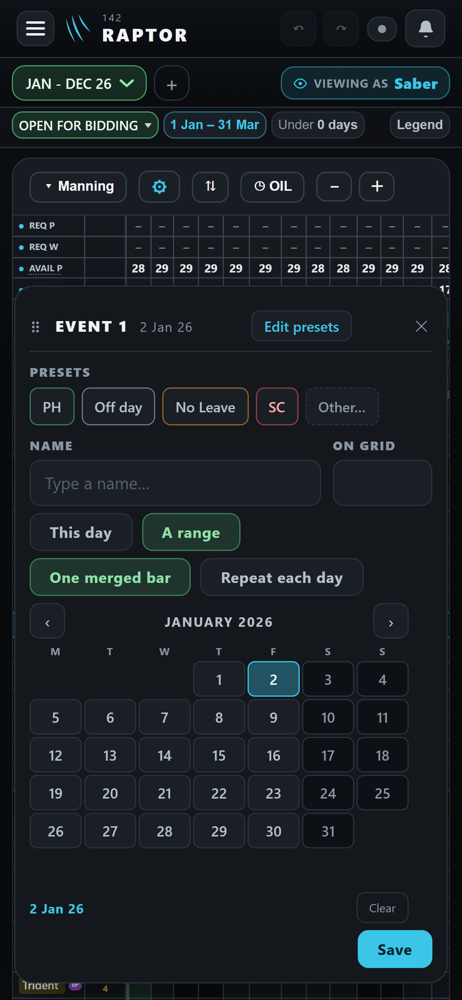</a><figcaption><span class="tag">today</span><b>An event's dates</b></figcaption></figure>
      <figure><a href="20-NEW-admin-date-range-phone.png"></a><figcaption><span class="tag new">new</span><b>Today</b> on a soft disc (15)</figcaption></figure>
    </div>
    <p class="rec"><b>Recommended:</b> show today, as everywhere else — one calendar, one look.</p>
  </section>

  <section>
    <h2>3. The size of the dates in the Leave War's sheets</h2>
    <p>The Leave War's sheets use a smaller calendar today (dates 30 px tall). The new calendar's dates are a finger's size (44 px), so those sheets grow a little taller on a phone.</p>
    <div class="pics">
      <figure><a href="05-leavewar-oil-report-range-phone.png">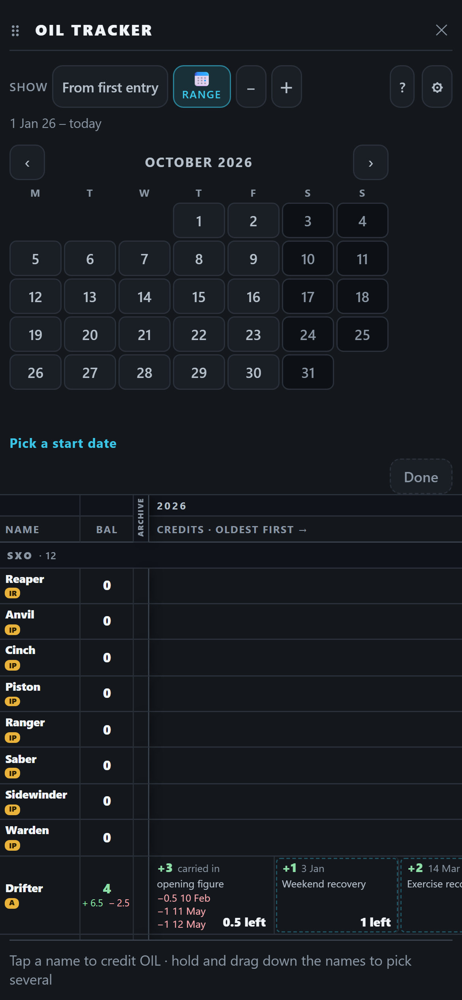</a><figcaption><span class="tag">today</span><b>OIL tracker range</b> — the small size</figcaption></figure>
      <figure><a href="06-leavewar-oil-credit-date-phone.png">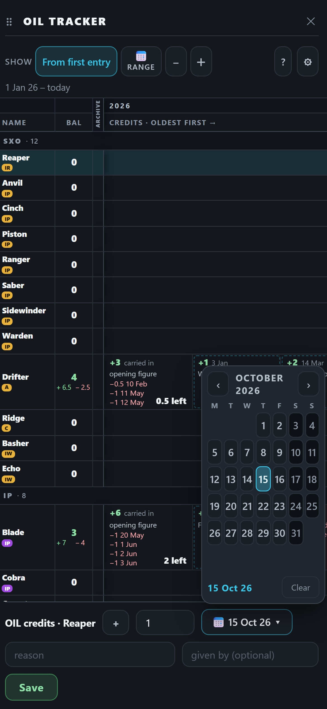</a><figcaption><span class="tag">today</span><b>An OIL credit's date</b></figcaption></figure>
      <figure><a href="21-NEW-every-from-date-phone.png"></a><figcaption><span class="tag new">new</span><b>Finger-sized dates</b></figcaption></figure>
    </div>
    <p class="rec"><b>Recommended:</b> one size everywhere (the finger's size); a smaller one only if a sheet would no longer fit on your iPhone, shown to you first.</p>
  </section>

  <section>
    <h2>4. The Inputs list's date filter</h2>
    <p>The Inputs list's "show these dates" filter uses the same older calendar as an input's own window, but it was not on step two's list.</p>
    <div class="pics">
      <figure><a href="09-inputs-date-filter-phone.png">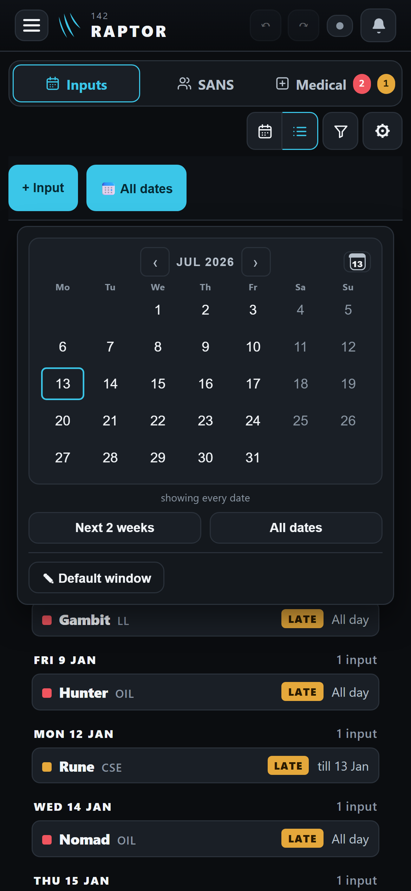</a><figcaption><span class="tag">today</span><b>The Inputs list's date filter</b></figcaption></figure>
      <figure><a href="08-input-window-dates-phone.png">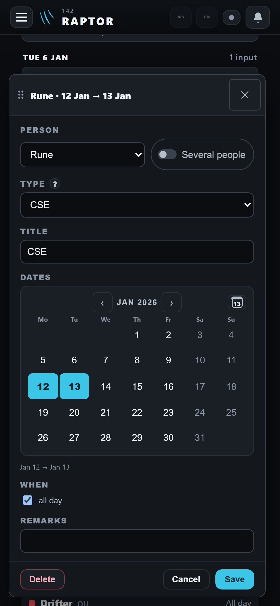</a><figcaption><span class="tag">today</span><b>An input's own dates</b> (on the list)</figcaption></figure>
    </div>
    <p class="rec"><b>Recommended:</b> yes, move it in step two too — otherwise one old calendar is left.</p>
  </section>

  <section>
    <h2>Kept as they are (no answer needed)</h2>
    <ul>
      <li><b>"Jump to a date"</b> keeps its own window; its Today icon still jumps the schedule to today at once.</li>
      <li><b>An input's own dates:</b> on a saved input your first tap still starts new dates, never stretches the old ones.</li>
      <li>Every calendar already starts its week on Monday.</li>
    </ul>
    <div class="pics">
      <figure><a href="10-jump-to-a-date-phone.png">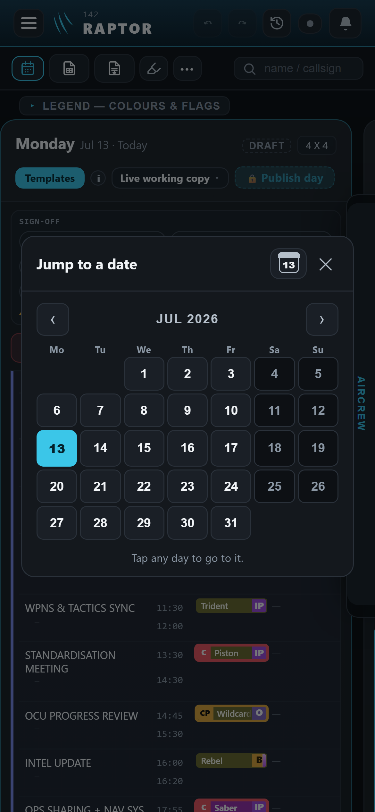</a><figcaption><span class="tag">today</span><b>Jump to a date</b></figcaption></figure>
    </div>
  </section>

  <section>
    <h2>On a desktop</h2>
    <div class="pics">
      <figure><a href="01-leavewar-bid-range-desk.png">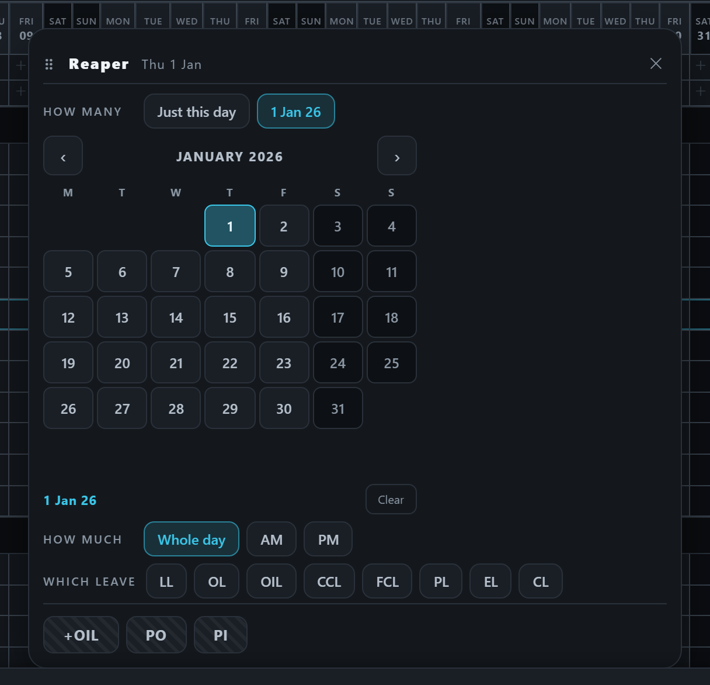</a><figcaption><span class="tag">today</span>A leave bid</figcaption></figure>
      <figure><a href="07-calendar-window-add-holiday-desk.png">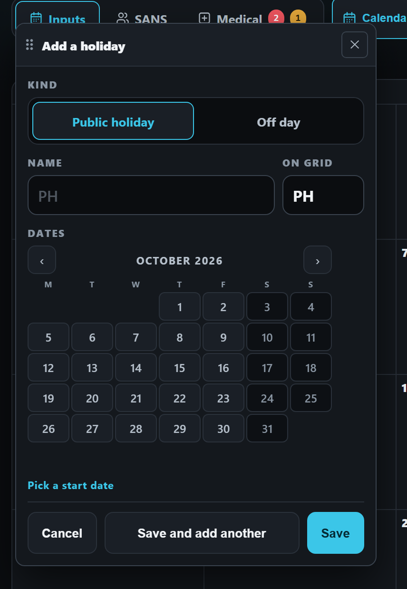</a><figcaption><span class="tag">today</span>Add a holiday</figcaption></figure>
      <figure><a href="08-input-window-dates-desk.png">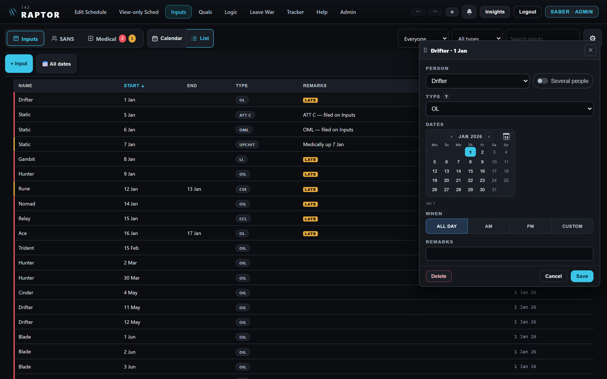</a><figcaption><span class="tag">today</span>An input's dates</figcaption></figure>
      <figure><a href="20-NEW-admin-date-range-desk.png">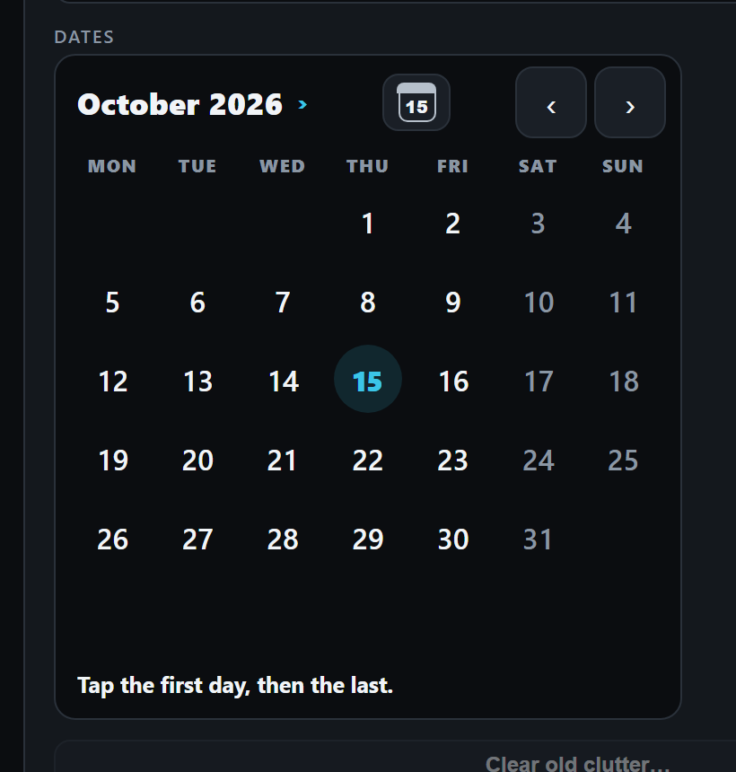</a><figcaption><span class="tag new">new</span>The new calendar</figcaption></figure>
    </div>
  </section>
</main>
